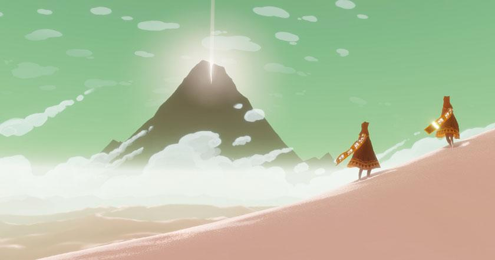
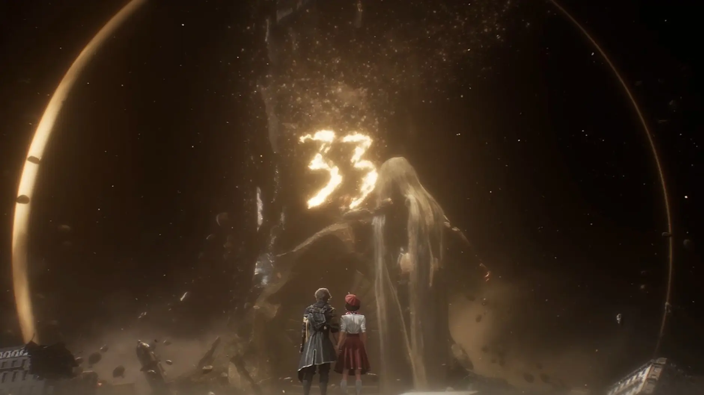

Reflections of our Humanity
Modern video games are often designed to be as addicting as possible to keep players in an endless cycle of engagement, but some unique titles choose to use games as narrative mediums to drive compelling and thought provoking tales.
These games combine well written, thematically rich stories and thoughtful, complete character arcs to explore the very essence of what it means to be human. These games often create experiences
that resonate with players long after the credits roll. By subtly weaving questions of morality, identity, mortality, and society into their narratives,
these games invoke not only entertainment but also deep self-reflection. Standout examples that embody this development philosophy are the Persona series and Expedition 33.
At the core of each game lies a profound exploration of the human condition, inviting players to contemplate their own existence and values through their actions that control the fate of their own stories.

Altus' Persona Series©
Persona as a series explores numerous deep philosphical concepts and questions throughout each game, tethering each of the main casts into complicated moral dilemmas
that the player must often navigate through. Although each entry revolves around differing moral messages, stories, and characters; they all share a common theme of
time, mortality, and the convoluted nature of the human psyche. As such, The series ultimately challenges players to confront the true nature of one's self, their relationships, and the inevitability of death.
Clair Obscur: Expedition 33©

Expedition 33 is a narrative-driven tactical RPG that delves into the mystery of the Expeditions, the Paintress, and the Gommage.
Within the world of Clair Obscur, the people are faced with death from the Paintress, who each year winds down the clock from 100—marking the oldest age anyone can reach before their Gommage.
The annual Gommage shapes the lives and destinies of all, as the threat of erasure looms over every generation.
This dread of inevitable death is a central theme that permeates the game, influencing the culture and psyche of its inhabitants.
Players guide the main cast of characters who set out on the 33rd Expedition to fight and kill the Paintress and end the Gommage.
Themes of sacrifice, resilience, and the indomitable human spirit emerge as players wrestle with the mortality of their characters and
the desperation in their struggle to end the cycle.
At its surface, Expedition 33 is a thrilling exploration of how humanity struggles and pushes forth through insurmountable odds and challenges.